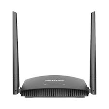

Uma rede neural é um modelo computacional inspirado no sistema nervoso biológico de organismos vivos. Consiste em um conjunto de unidades interconectadas, chamadas de neurônios artificiais ou unidades de processamento, que trabalham em conjunto para resolver problemas complexos de processamento de dados, reconhecimento de padrões, tomada de decisão e aprendizado.
Um roteador é um dispositivo de rede que encaminha o tráfego de dados entre redes de computadores. Ele atua como um ponto de acesso entre dispositivos dentro de uma rede local (LAN) e também entre a LAN e a internet. Os roteadores operam na camada de rede do modelo OSI (Open Systems Interconnection) e são essenciais para rotear pacotes de dados entre redes para garantir que eles cheguem ao seu destino corretamente.